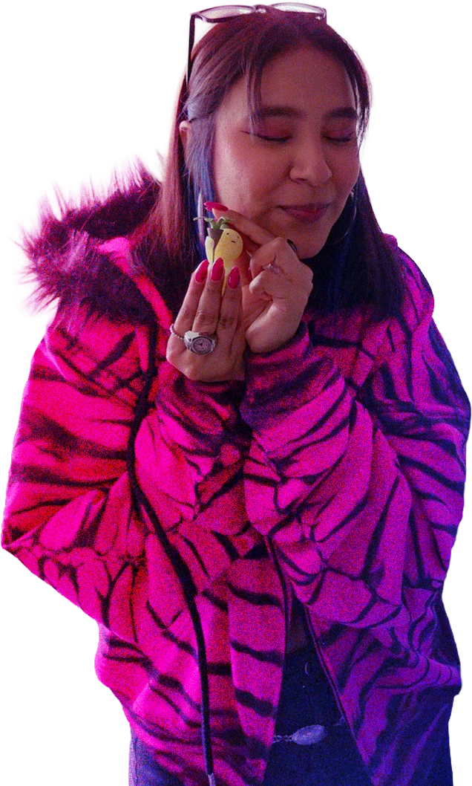

DISEÑO GRÁFICO · ESPECIALIDAD MULTIMEDIA
RUTH
PEREZ✳︎
Identidades visuales, diseño editorial y experiencias digitales.
EXPLORAR PROYECTOS01 / PORTAFOLIO
TRABAJOS
SELECCIONADOS.
Una selección de proyectos académicos y personales de identidad, experimentación, editorial y multimedia.
02 / PERFIL
SOBRE
MÍ.

HOLA, SOY RUTH PEREZ.
Estudiante de tercer año de Diseño Gráfico, especialidad Multimedia, en la Universidad de Artes, Ciencias y Comunicación (UNIACC), Santiago de Chile.
Me interesa especialmente crear identidades visuales y propuestas gráficas que conecten conceptos, narrativa y estética. Disfruto explorar soluciones creativas, trabajar en equipo y desarrollar piezas visuales en distintos soportes.
Actualmente busco una oportunidad de práctica profesional para aportar mis conocimientos y continuar aprendiendo en proyectos reales.
ÁREAS DE INTERÉS
Branding · Identidad visual · Diseño publicitario · Diseño editorial · Diseño experimental
HERRAMIENTAS
Avanzado: Photoshop, Illustrator, InDesign
Intermedio: Canva
Básico: After Effects, Premiere Pro, Figma, p5.js
IDIOMAS
Español nativo · Inglés básico
DESCARGAR CV INSTAGRAM03 / CONTACTO